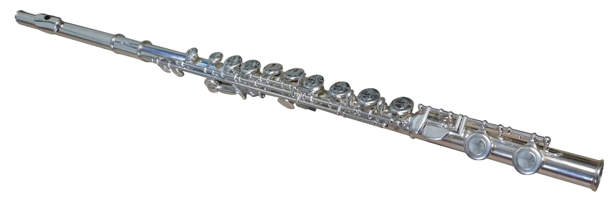

The saxophone is a relatively modern instrument, invented by Adolphe Sax around the 1840s. He patented 14 variations in 1846 but the alto and tenor saxophones pitched in Eb and Bb respectively quickly became the most common. Today, the saxophone is used in a wide array of musical styles. The saxophone produces sound through a vibrating column of air caused by the player blowing through a single cane reed attached to the mouthpiece. The pitch is controlled by opening and closing tone holes along the instrument's body, which changes the effective length of the air column.
FluteThe flute is a fascinating and ancient wind instrument with a rich history and diverse forms found across the globe. Flutes are classified as aerophones, meaning they produce sound by a vibrating column of air. Players create this vibration by blowing across an opening in the instrument, causing the air column to split and vibrate. Pitch is controlled by opening and closing tone holes along the flute's body, which changes the length of the vibrating air column. The flute is a musical instrument belonging to the woodwind family. It produces sound by directing a stream of air against a sharp edge, causing the air column within the instrument to vibrate.
ClarinetClarinets are an instrument for tryhards who think they are pretty much better than everyone. I mean the instrument itself is pretty sick but the people who play it just give it a bad rep. Single-reed instrument: Sound is produced by blowing air over a single reed, causing it to vibrate against the mouthpiece. Cylindrical bore: Unlike most wind instruments, the clarinet's body is cylindrical, meaning it doesn't gradually get wider along its length until the bell. Woodwind family: Related to instruments like the flute, oboe, and bassoon. Wide range of pitches: The clarinet has the largest register of all wind instruments, with various types covering different tonal ranges from very high to very low.
TromboneTrombones are probably my favorite brass instruments as they can be pretty loud and they have a very unique playstyle. Unlike most instrument where you press buttons, Trombones use slides instead of buttons which makes them both easier and harder to play in different settings. The trombone is a brass wind instrument distinguished by its telescopic slide, which is used to change pitch. It is a descendant of the trumpet, developed in the 15th century, and was initially known as the sackbut.
It is a musical instrument typically made of brass, consisting of a long, thin tube that is coiled back on itself. It has a mouthpiece at one end and a bell-shaped opening at the other. Sound Production: Sound is produced by buzzing the lips into the mouthpiece, which creates a vibration that travels through the instrument's tubing and is amplified by the bell. Pitch Control: Modern trumpets typically have three valves (piston or rotary) that change the length of the tubing the air flows through, allowing the musician to produce different pitches and play a full chromatic scale.
TubaThe tuba is a large, low-pitched brass instrument. It is the lowest-sounding member of the brass family. Lowest Brass Instrument: The tuba boasts the lowest tonal range among brass instruments. Structure: It consists of a long length of vertically coiled tubing, a flared bell, a conical bore, valves, and a mouthpiece. How it's Played: Like all brass instruments, the tuba is played by buzzing the lips into the mouthpiece, creating vibrations that produce sound. History: The modern tuba was developed in the 19th century and has largely replaced the ophicleide in modern orchestras. It was invented by Wilhelm Friedrich Wieprecht and Johann Gottfried Moritz in 1835. Types: Tubas come in various sizes and pitches, including F, Eb, C, and Bb. They also have different valve systems, including 3, 4, or 5 valves.
French HornThe French horn is a brass instrument known for its distinctive circular shape and rich, mellow tone. Circular tubing: The French horn's tubing is coiled into a circle, giving it its unique appearance. Mouthpiece: Players produce sound by buzzing their lips into a cup or funnel-shaped mouthpiece. Valves: Modern horns typically have three or four rotary valves (operated by the left hand) that redirect air through different lengths of tubing to change the pitch. Bell: A flared bell at the end of the tubing amplifies and projects the sound, which in an orchestral setting, often points away from the audience.
OboeThe oboe is a beautiful and important double-reed woodwind instrument. It is a soprano-range instrument typically in the key of C. Woodwind family: The oboe is a member of the woodwind instrument family, alongside instruments like the flute, clarinet, and bassoon. Double reed: It uses a double reed, made of two pieces of cane tied together, which vibrate against each other when air is blown through them to produce sound. This makes it a "double-reed" instrument. Conical bore: The oboe has a conical bore (tapering tube), contributing to its penetrating and expressive tone. Construction: It is a long, slender wooden tube with metal keys that open and close holes along its length, allowing musicians to produce different notes.